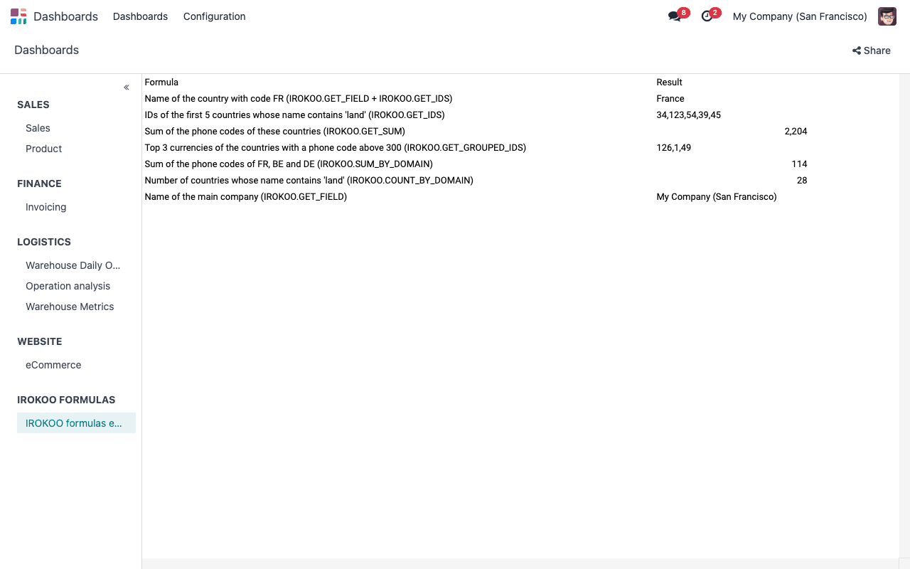

Spreadsheet Data Formulas pulls live Odoo data into spreadsheets and dashboards with formulas: read a field, search records, then sum, count or group any model by filter.
A dashboard often needs one figure that no pivot or list gives directly: the name of a given record, the total of a filtered set, the top groups of a model. Instead of exporting data and pasting it into a sheet, type a formula in a cell: the value is read from Odoo when the spreadsheet opens.

| Formula | Returns |
|---|---|
IROKOO.GET_FIELD(model, id, field) | The value of a field of one record |
IROKOO.GET_IDS(model, order, direction, limit, filters) | The IDs of the matching records, comma-separated, sorted and limited |
IROKOO.GET_SUM(model, field, ids) | The sum of a field over a list of IDs, for example the result of GET_IDS |
IROKOO.GET_GROUPED_IDS(model, group_by, field, function, filters, limit) | The values of the groups, ordered by their aggregate (sum, avg, count, min or max) |
IROKOO.SUM_BY_DOMAIN(model, field, filters) | The sum of a field over the matching records |
IROKOO.COUNT_BY_DOMAIN(model, filters) | The number of matching records |
GET_FIELD on the ID returned by GET_IDS, GET_SUM on a cell holding IDsFilters are separated by semicolons, for example partner_id=42;state:in:draft,sent.
| Syntax | Meaning |
|---|---|
field=value | Equal (a value with % becomes a case-insensitive search) |
field>value, field<value, field!=value | Comparisons |
field~value | Contains, case-insensitive |
field:operator:value | Any Odoo domain operator, for example name:ilike:test |
field:in:value1,value2 | One of several values |
=IROKOO.COUNT_BY_DOMAIN("res.partner", "city=Lille").spreadsheet and spreadsheet_dashboardCan a user see data he is not allowed to read?
No. The formulas read the data with the access rights of the user who opens the
spreadsheet: record rules filter the results, and a model he may not read returns an
error instead of data.
Which names do the formulas expect?
Technical names: sale.order for the model, amount_total for the
field. They are shown in developer mode.
What does IROKOO.GET_GROUPED_IDS return?
The values of the groups (for example the partner IDs), sorted by their aggregate, highest
first. The aggregated amounts themselves come from SUM_BY_DOMAIN or
COUNT_BY_DOMAIN on each group.
How do I build a filter from a cell?
Concatenate in an intermediate cell, for example ="partner_id="&B1, and
pass that cell as the filter.
This module is provided for educational purposes, without official support.
Questions and feedback: info@irokoo.fr